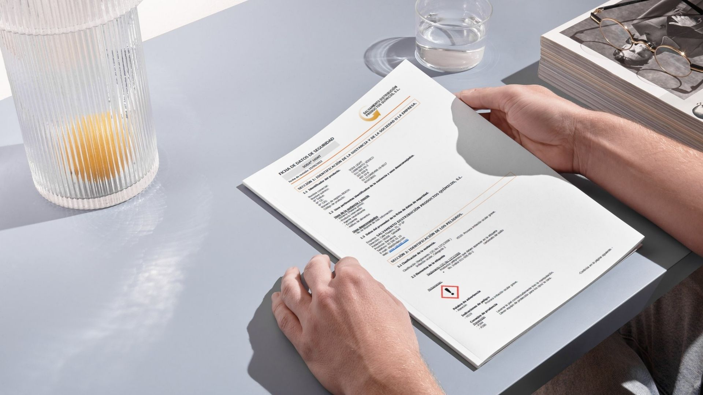
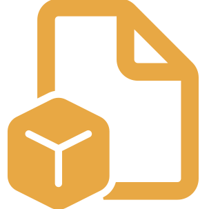
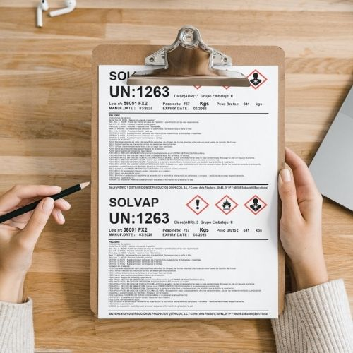

Gestionamos productos químicos con un proceso estructurado, seguro y trazable. Coordinamos cada fase con control técnico y cumplimiento normativo.
En Salvadis aplicamos una metodología de trabajo orientada a garantizar la eficiencia, la seguridad y la transparencia en cada operación.
Supervisamos todo el proceso, desde la evaluación inicial del material hasta su destino final, integrando equipos técnicos, operadores logísticos y soluciones adaptadas a cada caso.
Trabajamos conforme a normativas como ADR, CLP o REACH, asegurando que cada fase se ejecuta bajo criterios legales, técnicos y operativos exigentes.
El cliente nos facilita la información básica del material.
Realizamos inspección, recogemos muestras y evaluamos propiedades, peligrosidad y compatibilidades del producto.
Definimos la mejor solución técnica y económica y acordamos las condiciones con el cliente.
Organizamos la recogida y traslado seguro cumpliendo la normativa vigente.
El material es gestionado en instalaciones colaboradoras hasta su destino final, con control completo de la operación.

Supervisamos toda la documentación técnica necesaria, incluyendo Certificados de Análisis, Fichas Técnicas y Hojas de Seguridad, garantizando confidencialidad y control en cada operación.
Proporcionamos muestras físicas y reportes fotográficos detallados para validar el estado y características del producto.
Trabajamos con almacenes externos cualificados y certificados para la manipulación de productos químicos, adaptados a los requisitos legales de seguridad, ventilación y contención.
Evaluamos propiedades, peligrosidad y compatibilidades del producto.
Validamos la documentación legal exigida y clasificamos según normativas.
Operamos con transporte ADR y personal certificado.
Gestionamos el material en instalaciones colaboradoras con trazabilidad completa.
Emitimos informes, certificados y documentación reglamentaria.
Todos nuestros procesos cumplen con normativas nacionales e internacionales:
Utilizamos sistemas de control digital para garantizar trazabilidad desde el origen hasta la entrega final o el tratamiento del residuo.

En Salvadis gestionamos cada operación con seguridad, rapidez y cumplimiento normativo.
Solicita asesoramiento arrow_outward